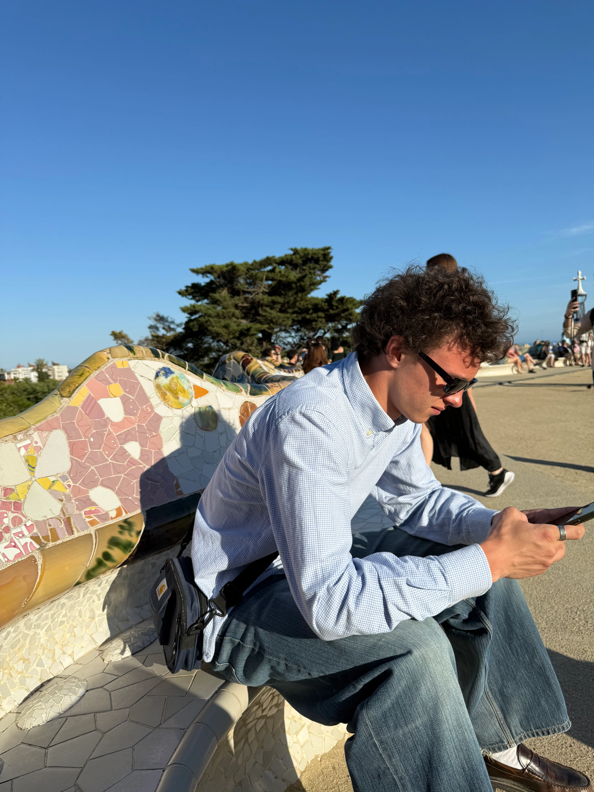

Heyy, og velkommen til min portfolio hjemmeside. Her vil du kunne gå på opdagelse og udforske de temaer og opgaver jeg har været igennem på 1 semester på multimediedesign. Jeg har her, samlet alle mine projekter, hvor du både kan se mine færdige resultater og læse lidt om de ting jeg har lært.
Tobias
Portfolio
